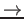
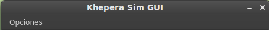

Siguiente:
Parte superior
Subir:
Modos: Demo y Control
Anterior:
Control
Índice General
Log
Se ha implementado un historial de mensajes del sistema que podemos sacar pulsando en la barra de menú sobre Opciones

Mostrar Output.
Figura 10:
Barra de Menú

Daniel Peiró 2014-05-16